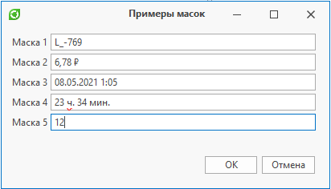

Маска ввода |
Маска ввода — это набор символов, определяющий формат входных данных. По заданной маске валидируется введенный текст, а также маска позволяет заполнять параметры в удобной форме ввода
В диалоге ввода поддерживаются следующие типы масок:
-
простая (данная маска используется в случаях, когда требуется строка с фиксированными форматом и длиной, например, почтовый индекс);
-
регулярное выражение (формат входных данных определяется регулярным выражением);
-
числовая (предназначена для ввода числовых значений [целое число, значения с плавающей запятой, валюты, проценты и т.д.] и для настройки их отображения);
-
дата и время (для ввода значений даты и времени в различных форматах);
-
промежуток времени (для ввода значений временных интервалов в различных форматах)
Простая маска представляет собой строку, которая может состоять из метасимволов, специальных и литеральных символов.
Метасимволы
Метасимволы используются для представления ряда символов.
Когда метасимвол задан в определенной позиции в маске, пользователь может ввести любой символ из определяемого метасимволом диапазона только в эту позицию поля ввода
|
Символ |
Значение |
|---|---|
|
L |
Символ L требует алфавитный символ в данной позиции, заполнение обязательно |
|
l |
Символ l допускает алфавитный символ в данной позиции и не требует заполнения |
|
A |
Символ A требует буквенно-цифровой символ в данной позиции, заполнение обязательно |
|
a |
Символ a допускает буквенно-цифровой символ в данной позиции и не требует заполнения |
|
C |
Символ C требует произвольный символ в данной позиции, заполнение обязательно |
|
c |
Символ c допускает произвольный символ в данной позиции и не требует заполнения |
|
0 |
Символ 0 требует только числовой символ в данной позиции, заполнение обязательно |
|
9 |
Символ 9 допускает только числовой символ в данной позиции и не требует заполнения |
|
# |
Символ # допускает только числовой символ, "+" или "-" и не требует заполнения |
Специальные символы
Специальные символы используются для управления регистром входной строки и представления различных разделителей, а также символов валюты.
|
Символ |
Значение |
|---|---|
|
> |
Символ > преобразует в верхний регистр все следующие за ним символы до конца маски или до тех пор, пока не встретится символ < |
|
< |
Символ < преобразует в нижний регистр все следующие за ним символы до конца маски или до тех пор, пока не встретится символ > |
|
<> |
Если символы <> указываются вместе, то проверка регистра не выполняется, и данные форматируются с учетом регистра, используемого пользователем во время ввода данных |
|
/ |
Символ / используется для разделения месяцев, дней и лет в датах |
|
: |
Символ : используется для разделения часов, минут и секунд в значениях времени. |
|
$ |
Символ $ используется для обозначения денежных значений |
Литеральные символы
Литеральными символами являются буквенные символы, не являющиеся метасимволами или специальными символами.
Литералы автоматически добавляются на позиции определенные маской. Курсор пропускает литеральные символы во время ввода.
Метасимволы и специальные символы также могут отображаться как литералы, если им предшествует обратная косая черта (\).
ДиалогВвода диалогВвода = СоздатьДиалогВвода("Примеры масок"); // Простая маска, позволяющая ввести код, состоящий из двух частей, разделенных "-". // Первая часть состоит из одного или двух буквенных символов, вторая из двузначного или трехзначного числа диалогВвода.ДобавитьМаску("Маска 1", ">Ll-009", ТипМаски.Простая); // Числовая маска. // # - десятичная цифра, можно ввести в соответствующую позицию или оставить пустой. Пустые позиции не отображаются. // 0 - в соответствующую позицию можно ввести десятичную цифру. Пустые заполнители представлены символом "0" // $ - символ валюты (знака денежной единицы), зависящий от текущей культуры диалогВвода.ДобавитьМаску("Маска 2", "##0.## $", ТипМаски.Числовая); // Маска даты и времени. // g - дата + время (время в сокращенной записи, т.е. часы и минуты) диалогВвода.ДобавитьМаску("Маска 3", "g", ТипМаски.ДатаИВремя); // Маска промежутка времени диалогВвода.ДобавитьМаску("Маска 4", "hh' ч. 'mm' мин.'", ТипМаски.ПромежутокВремени, "01 ч. 00 мин."); // Маска в виде регулярного выражения, позволяющего вводить только числа в диапазоне от 1 до 24 диалогВвода.ДобавитьМаску("Маска 5", @"(1?[1-9])|([12][0-4])", ТипМаски.РегулярноеВыражение); диалогВвода.Показать();

|
|
|---|
|
Информация о маске ввода более подробно изложена в документации на официальном сайте DevExpress |